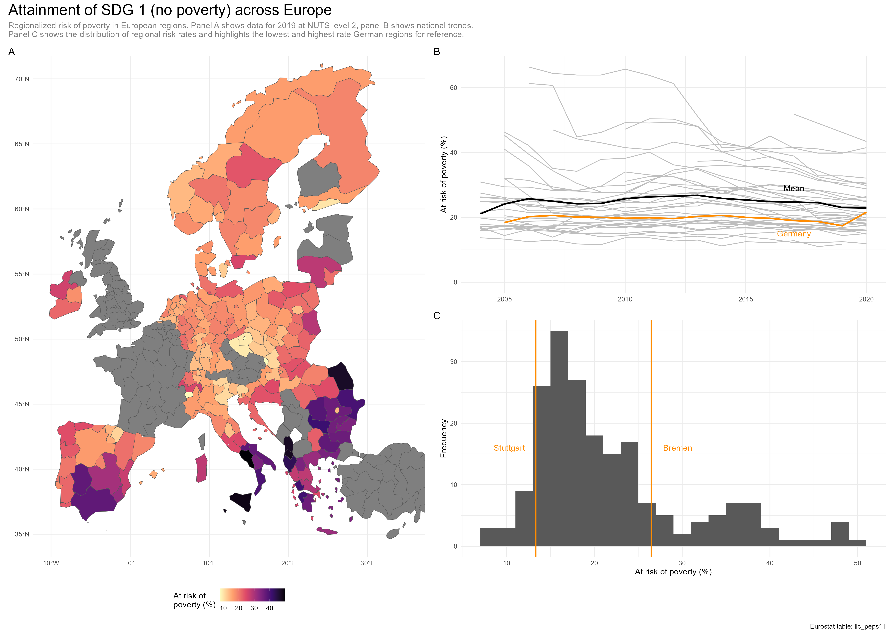
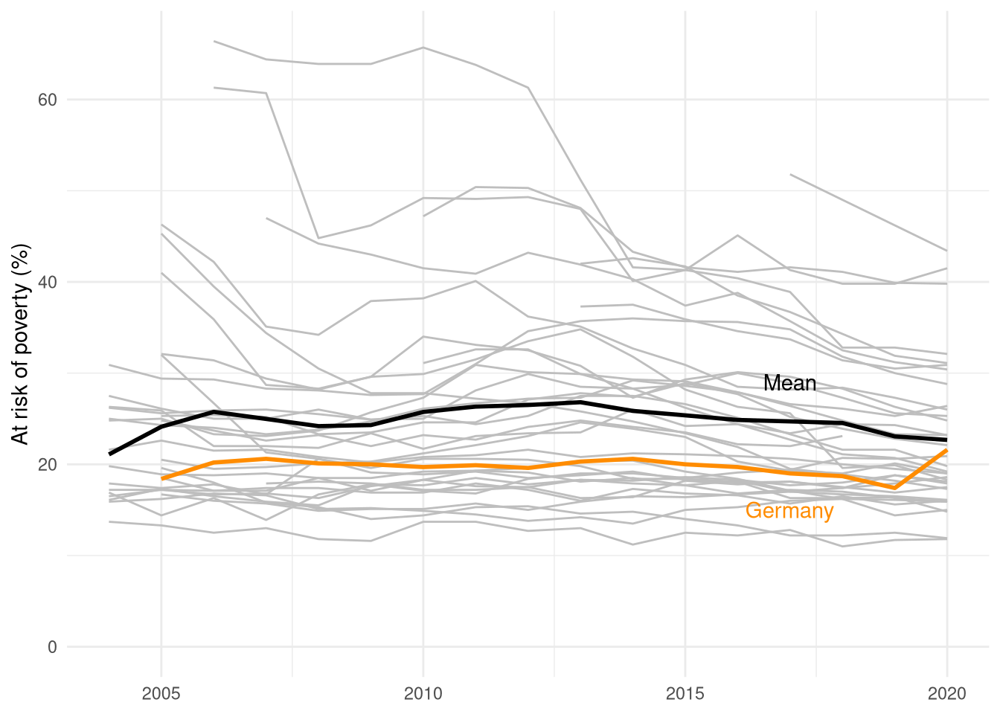
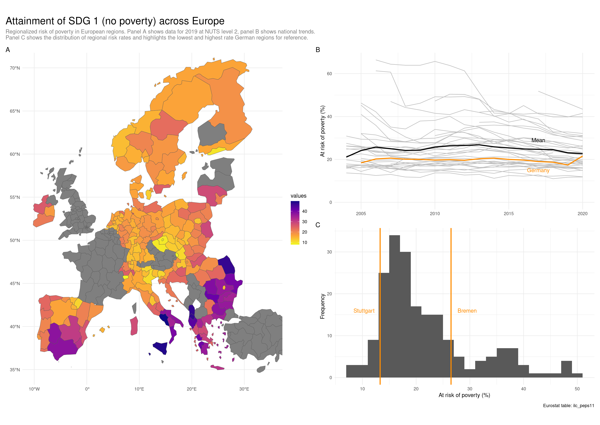

library(eurostat) # R package to interface with EurostatQuantitative Methods and Statistics
An applied course using the R programming language
Step 0: Asking a question
In the wake of the 2030 Agenda for Sustainable Development, the United Nations has defined 17 Sustainable Development Goals (SDGs). The SDGs cover a range of social, economic, and environmental areas, such as poverty, education, or climate change. This notebook aims to provide an answer to the question of how European regions vary regarding their accomplishment of SDG 1 (no poverty) and how Germany fares compared to other European countries.
The plot that we obtain at the end of the notebook looks like this:

Step 1: Getting data
We’re asking about differences in European regions, so a good place to start is Eurostat, the statistical office of the European Union. Indeed, Eurostat has compiled a range of statistical indicators tracking all 17 SDGs.
Typically, we would now proceed to manually find and download a suitable dataset using the web interface, e.g. as an Excel spreadsheet. However, there is a more convenient way: We can use the eurostat R package to directly interface with Eurostat.
Looking at the above website, a suitable table is ilc_peps11, which contains information on persons at risk of poverty or social exclusion, aggregated by NUTS regions. We can use this table code to download the table to an R data frame (the equivalent of an excel spreadhseet):
dat <- get_eurostat(id = "ilc_peps11", time_format = "num")Table ilc_peps11 cached at /tmp/RtmpphZEUB/eurostat/faeacdd4504e47e73c0f199e2f434f34.rdsdat# A tibble: 3,210 × 5
freq unit geo TIME_PERIOD values
<chr> <chr> <chr> <dbl> <dbl>
1 A PC AL 2017 51.8
2 A PC AL 2018 49
3 A PC AL 2019 46.2
4 A PC AL 2020 43.4
5 A PC AL01 2017 56.7
6 A PC AL01 2018 48.2
7 A PC AL01 2019 47.3
8 A PC AL01 2020 44.8
9 A PC AL02 2017 49.4
10 A PC AL02 2018 51
# ℹ 3,200 more rowsNext to the data about poverty rates, we need data about the spatial geometries of our units to create a map. Luckily, this is also available from Eurostat through the GISCO service, which we can also query through the R package:
library(sf) # R package for handling spatial data
dat_geo <- get_eurostat_geospatial(nuts_level = 2)Here, we specify the NUTS regional level at which to obtain the data (level 2 means Regierungsbezirke in Germany) to match the highest administrative resolution of our poverty indicator.
Step 2: Wrangling data
As we can see in the table above, the data we got contains information for different years (2003 to 2022), and at different levels of spatial aggregation (NUTS 0 - 2).
We here filter down the data set to contain data for 2019 at NUTS 2 (which is represented by 4-digit codes):
library(tidyverse) # R package(s) to handle and plot data
dat_clean <- rename(dat, time = TIME_PERIOD)
dat_2019 <- filter(dat_clean, time == 2019)dat_clean# A tibble: 3,210 × 5
freq unit geo time values
<chr> <chr> <chr> <dbl> <dbl>
1 A PC AL 2017 51.8
2 A PC AL 2018 49
3 A PC AL 2019 46.2
4 A PC AL 2020 43.4
5 A PC AL01 2017 56.7
6 A PC AL01 2018 48.2
7 A PC AL01 2019 47.3
8 A PC AL01 2020 44.8
9 A PC AL02 2017 49.4
10 A PC AL02 2018 51
# ℹ 3,200 more rowsBefore we proceed to visualizing our data, we need to combine our poverty indicator with the spatial data. We do this with a left_join operation:
dat_combined <- left_join(dat_geo, dat_2019, by="geo")Step 3: Visualizing data
Panel A: Map with poverty risk for NUTS-2 regions, 2019
With the combined data on poverty and spatial geometries at hand, we are now ready to plot a map. We do this using the ggplot2 R package, which is contained in the tidyverse already loaded above.
You create a plot with ggplot by adding together different layers (geom_*) and further specifications, and by specifying a mapping between variables in the input data set and visual properties of the plot (using aes()):
theme_set(theme_minimal())
p_map <- ggplot(dat_combined) +
geom_sf(aes(fill=values)) +
coord_sf(xlim=c(-10, 35), ylim=c(35, 70)) +
scale_fill_viridis_c(direction=-1, option = "C")
p_map
Panel B: Time series of poverty risk at the national level
We now also want to plot the change in poverty risk, for which we resort to a time series plot. We start by filtering down the original data frame to two-digit country codes:
dat_ts <- filter(dat_clean, nchar(geo) == 2)To highlight both a mean trend as well as the trend for Germany, we furthermore create two helper data sets. First, We group by year and compute the mean over all countries:
dat_ts_mean <- group_by(dat_ts, time) |> summarize(values=mean(values))Second, we filter our national trend data to only include rows with the ‘DE’ country code:
dat_ts_de <- filter(dat_ts, geo == "DE")We are now ready to put together a plot with all country trends in grey and highlighted trends for the mean and Germany. We do this by stacking geom_line() specifications and adding annotations with annotate() :
highlight_col <- "darkorange"
p_ts <- ggplot() +
geom_line(data=dat_ts, aes(x=time, y=values, group=geo), color="grey") +
geom_line(data=dat_ts_mean, aes(x=time, y=values), color="black", lwd=1) +
geom_line(data=dat_ts_de, aes(x=time, y=values), color=highlight_col, lwd=1) +
annotate("text", x=2017, y=29, label="Mean", color="black") +
annotate("text", x=2017, y=15, label="Germany", color=highlight_col) +
lims(y=c(0, NA), x=c(2004, 2020)) +
labs(x=NULL, y="At risk of poverty (%)")
p_ts
Panel C: Histogram with individual regions highlighted
Finally, we want to create a histogram of the regional poverty risk (at NUTS 2 level) and highlight the highest risk and lowest risk regions in Germany. We can obtain the latter with a combination of filtering and sorting (via arrange()) and then pulling out the first and last row (with slice()):
de_hi_lo <- dat_combined |>
drop_na() |>
filter(time == 2019,
nchar(geo) == 4,
str_starts(geo, "DE")) |>
arrange(values) |>
slice(c(1, n()))With this in place, we create the histogram with geom_histogram() and add highlights with geom_vline() and geom_text() :
p_hist <- ggplot(de_hi_lo) +
geom_histogram(
data=drop_na(dat_combined),
aes(x=values),
binwidth=2
) +
geom_vline(
aes(xintercept=values),
color=highlight_col,
lwd=1
) +
geom_text(
aes(values, label=NUTS_NAME),
y=16,
nudge_x=c(-3, 3),
color=highlight_col
) +
labs(
x="At risk of poverty (%)",
y="Frequency"
)
p_hist
Combining the plots
Finally, we can put together and annotate the three plots with the patchwork R package, which allows us to stack plots on top of each other (with /) or put them side by side (with |):
library(patchwork)
p_map / p_ts | p_histWarning: Removed 7 rows containing missing values or values outside the scale range
(`geom_line()`).Warning: Removed 1 row containing missing values or values outside the scale range
(`geom_line()`).
title <- "Attainment of SDG 1 (no poverty) across Europe"
subtitle <- "Regionalized risk of poverty in European regions. Panel A shows data for 2019 at NUTS level 2, panel B shows national trends.\nPanel C shows the distribution of regional risk rates and highlights the lowest and highest rate German regions for reference."
caption = "Eurostat table: ilc_peps11"
p_combined <- p_map | (p_ts / p_hist)
p_combined <- p_combined +
plot_annotation(
title = title,
subtitle = subtitle,
caption = caption,
tag_levels = "A",
theme = theme(
plot.title = element_text(size=20),
plot.subtitle = element_text(colour="grey50")
)
)
ggsave("sdg_1_europe.png", width=16.5, height=11.7, dpi=300)
p_combined